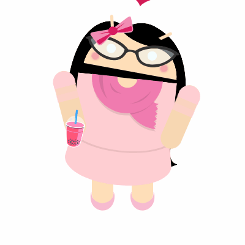

Hello~! My name is Hayley Huynh and I am a senior at LQ. I am currently taking 5 AP's and am overwhelmed. On a lighter note, my favorite thing or the thing that I look forward to about school are my friends. Even with my hectic schedule, I always manage to spend time with my family and friends. Besides my classes, I am the vice president of a club at school, which is Leukemia and Lymphoma Society, or LLS for short. In my free time, I like to catch up on the hours of sleep that I lost and listen to music. I especially like K-Pop and my ultimate bias is NCT's Mark but I do like other groups, with EXO, NCT, and Seventeen being my main three. My main goals in life would be to graduate college, find a career in the STEM field-more specifically, computer science-and to be happy.
Grade: 12
| Period | Class |
|---|---|
| 1 | AP Civics |
| 2 | AP Literature |
| 3 | AP Computer Science Principles |
| 4 | AP Statistics |
| 5 | Badminton |
| 6 | AP Calculus AB |
Favorite Quote: "When you think about giving up, remember why you started."-Unknown